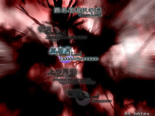
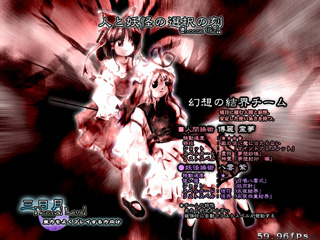

| ■難易度選択 |
|---|
| Ｅａｓｙ |
|
もっとも易しい難易度です。 東方を遊んだ事が無い、もしくは前作までが難しすぎてクリアできない、という方向けです。 |
| Ｎｏｒｍａｌ |
|
もっとも標準の難易度です。 気だるい午後のティータイムを、まったりと遊ぶには丁度良い位だと思います。 |
| Ｈａｒｄ |
|
ちょっと高めの難易度です。 アーケードでシューティングをプレイする方には、丁度いいくらいになっています。 結構シビアな難易度ですので、弾避けに自信の有る方は挑戦してみて下さい。 |
| Ｌｕｎａｔｉｃ |
|
呪われています。 プレイしてはいけません。 |
| Ｅｘｔｒａ（ＥｘｔｒａＳｔａｒｔ選択時のみ） |
|
難易度高めの気のふれたステージがプレイ出来ます。 難易度は、ノーマルとハードの中間くらいです。 |

| ■プレイヤー選択 |
|---|
|
プレイヤーを左右キーで、誰か１人を選択してください。 |
| ■ステージ選択（ＰｒａｃｔｉｃｅＳｔａｒｔ選択時） |
|---|
|
プレイするステージを選択してください ステージは、その難易度、キャラ、武器で一度クリアしたステージまでしか選択できません （コンティニューは可） |
| ■ステージ選択（ＳｐｅｌｌＰｒａｃｔｉｃｅ選択時） |
|---|
|
挑戦したいボスのいるステージを選択してください。 ステージの隣の数字は、 このモードでの取得数／挑戦数／総数 （本編での取得数／挑戦数） です。 また、右下の円グラフは取得率です。 左の大き目のグラフはこのキャラのみの取得率、右の小さめのグラフは全キャラ合計です。 なお、外円（濃い数字）はこのモードでの取得率、内円（薄い数字）は本編での取得率となっています、 |
| ■スペルカード選択（ＳｐｅｌｌＰｒａｃｔｉｃｅ選択時） |
|---|
|
挑戦したいスペルカードを選択してください。 本編で一度も見ていないカードは？？？？？で表紙され、挑戦できません。 選択条件は、本編で一度でも見れば（キャラ不問）、選択可能になります。 カーソルを合わせると、下に以下の情報が表示されます。 番号(No.???) カードの名前 カードマスター（使用者） 難易度 取得数／挑戦数(本編での取得数／挑戦数)[ボーナス最高点] 左側がキャラ別、右は総合です。 カードの補足 このモードで取得していない場合？？？？？で表示されます。 取得後は、カードの説明、補足、いい訳、独り言、等が表示されます |